Taishi, Hyogo: things to do, food and stays
Taishi · Hyogo
Taishi
Highlighted on the Hyogo map.
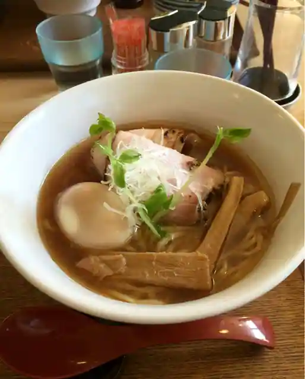
Stay
No bookable places to stay found in Taishi — nearest options in Tatsuno.
Dining
中華そば麦右衛門
Chuka Soba Mugi Uemon
喫茶 タマゴサンド製作所
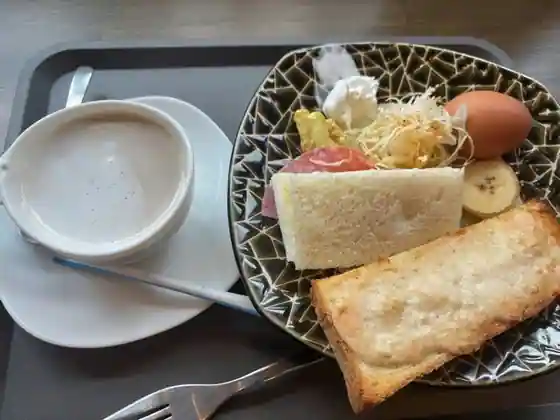
Kissa Tamagosando Seisakusho
洋食のオーニシ 太子店
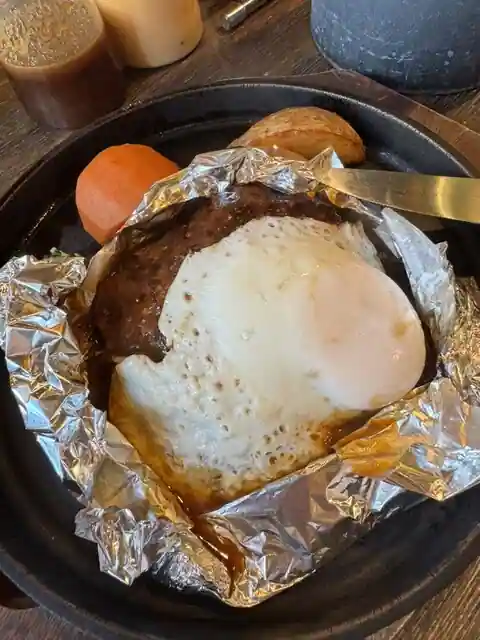
Yoshoku No Onishi Taishi
サンレモ
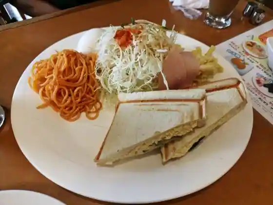
Sanremo
タマゴサンド製作所
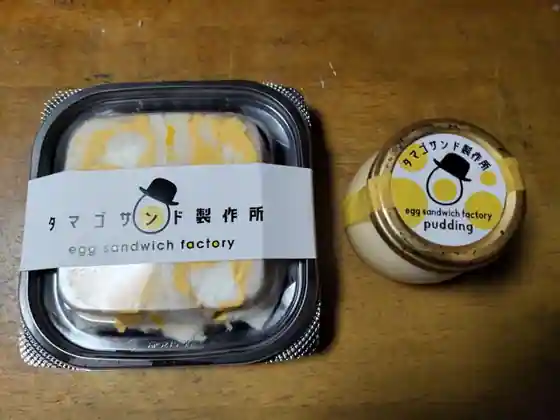
Tamagosando Seisakusho
レストランHAKUBA 太子町
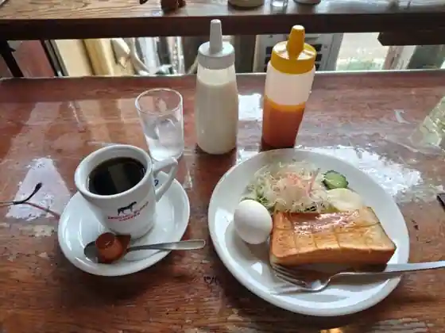
Restaurant HAKUBA Taishi Machi
あやがわうどん 太子店
Ayagawaudon Taishi
PAPA'S & MAMA'S
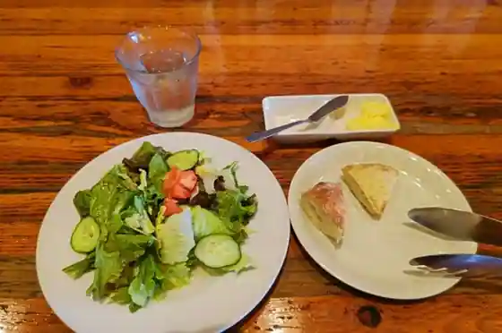
PAPA'S & MAMA'S
ズンバーグ サーフ
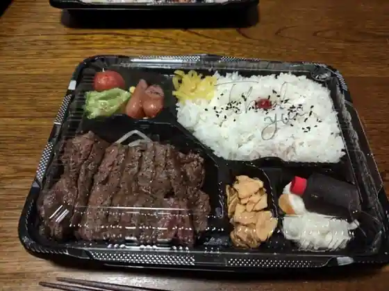
Zunbagu Safu
アジアンエスニック料理 マヤ
Ajian'Esunikku Ryori Maya
やない亭やまなか
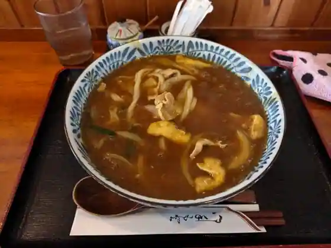
Yanai Tei Yamanaka
大黒
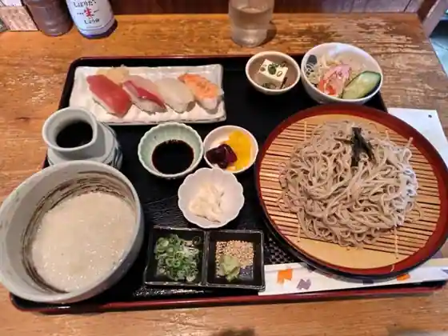
Daikoku
ボン
Bon
えん家 太子店
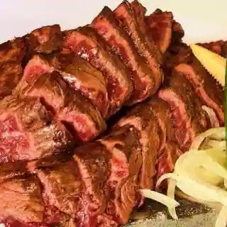
En Ie Taishi
フルーツカフェ かじゅまる
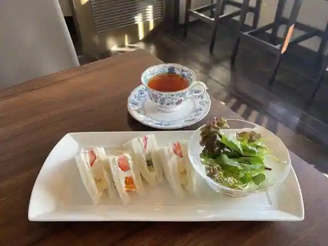
Furutsu Cafe Kajumaru
にぼし屋
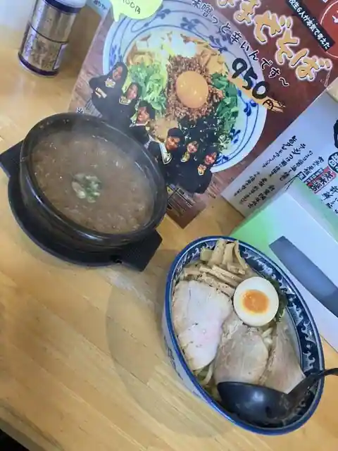
Niboshi Ya
らしく
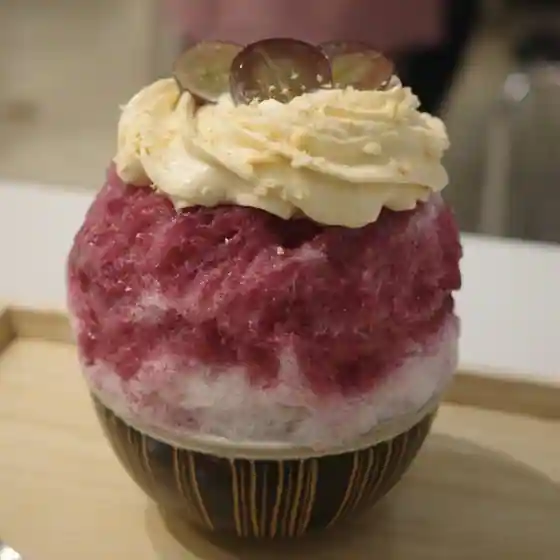
Rashiku
聖
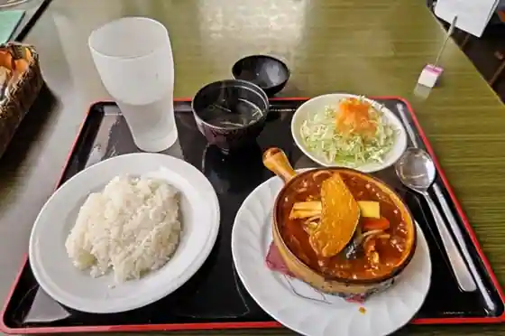
Hijiri
酒とお魚とごはん ひととき
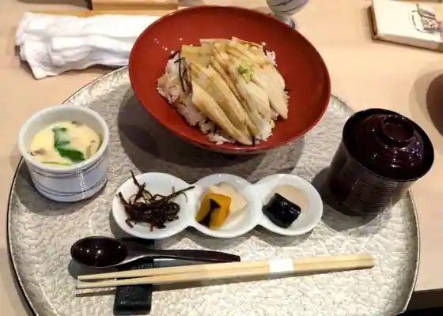
Sake To Sakana Togohan Hitotoki
中乃屋
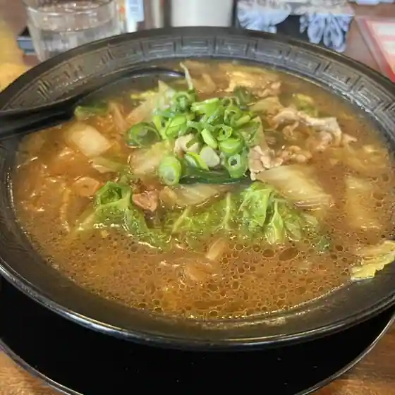
Naka No Ya
ノルマンディー 太子店
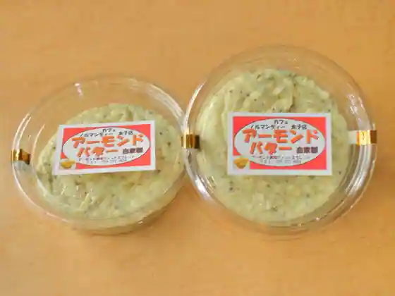
Norumandi Taishi
てんとう虫
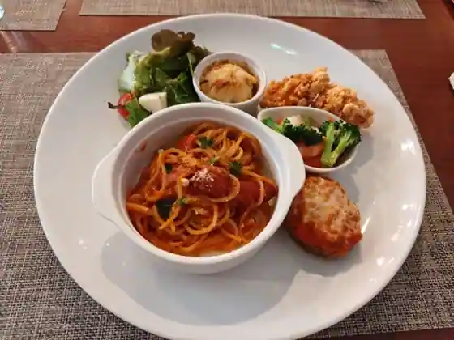
Tento Mushi
カフェ レン
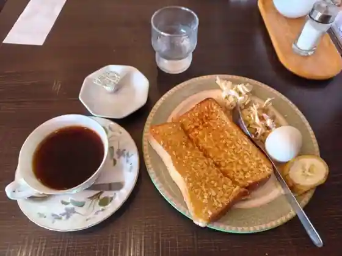
Cafe Ren
ナカノ
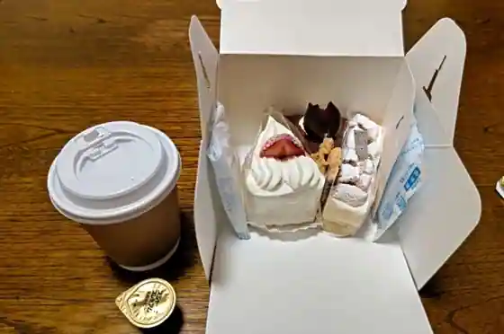
Nakano